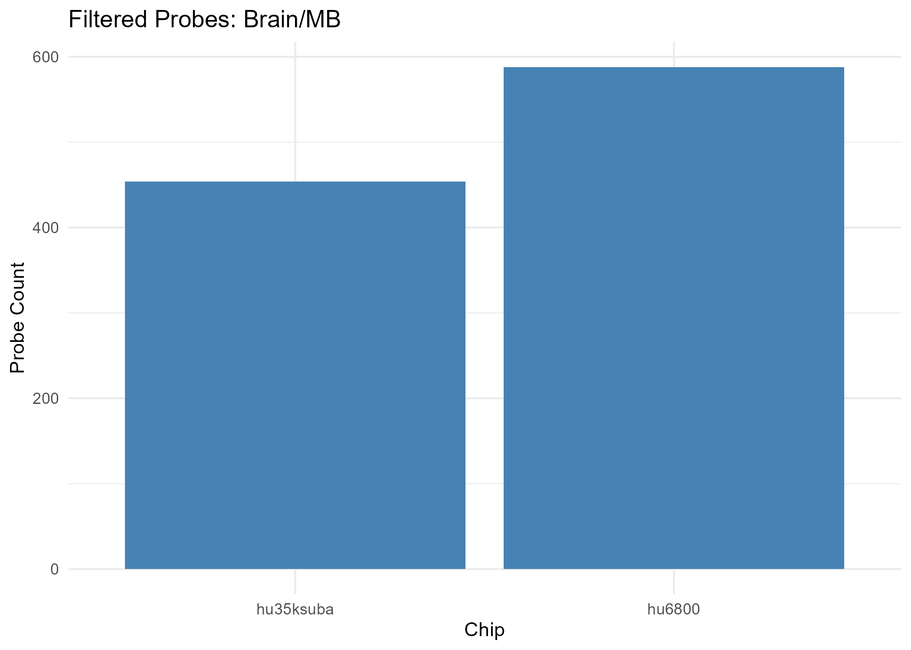
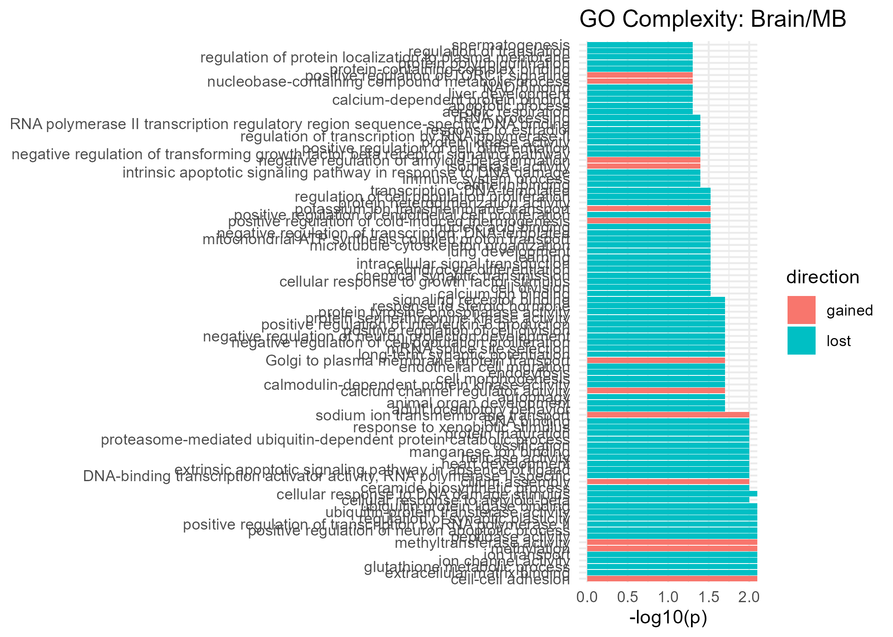
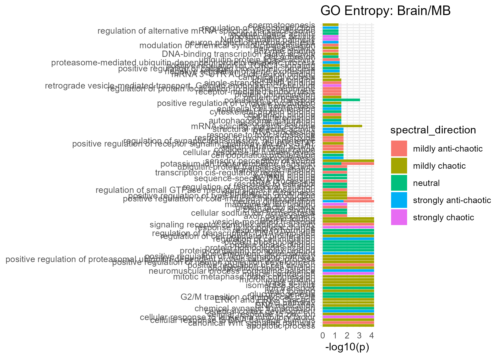
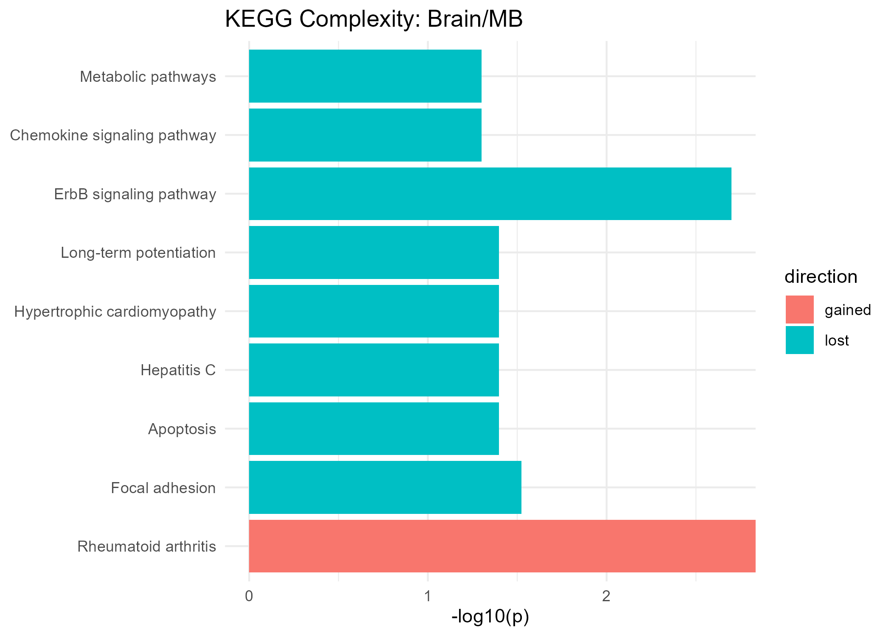
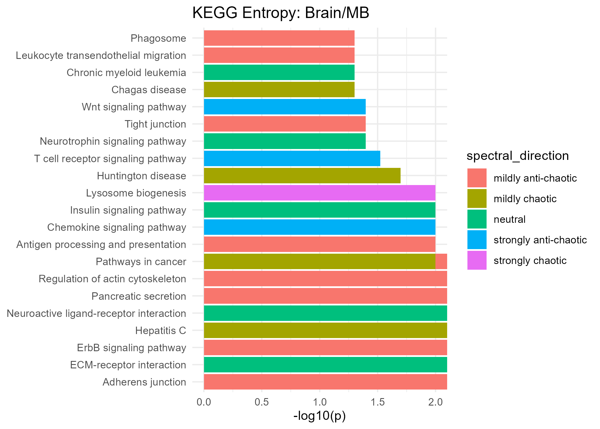

27 Comparison Report: Brain/MB
- Cancer Category: blastomas
- Chip hu35ksuba: 828 filtered probes
- Chip hu6800: 650 filtered probes
Overall Complexity & Entropy Assessment
| Measure | All Filtered Probes | GO MF Terms | KEGG Pathways | HALLMARK Genes |
|---|---|---|---|---|
| Complexity | not available | no clear change (uncertain) | strong gain (uncertain) | strong loss (moderately supported) |
| Shannon Entropy | not available | no clear change (moderately supported) | no clear change (well supported) | no clear change (uncertain) |
| Spectral Entropy | not available | no clear change (uncertain) | no clear change (uncertain) | mildly chaotic (uncertain) |
Note
Interpretation Guide
- Gain = Increased complexity from normal to tumor
- Loss = Complexity reduction from normal to tumor
- Chaotic = Increased entropy from normal to tumor
- Anti-Chaotic = Entropy reduction from normal to tumor
- P-values = All p-values unadjusted unless noted
Gain Complexity Clusters
| Cluster | # Terms | p-value | Representative Terms |
|---|---|---|---|
| 10 | 2 | 0.018 | brain development; substantia nigra development |
| 16 | 3 | 0.035 | regulation of gene expression; positive regulation of gene expression; positive regulation of gene expression |
| 54 | 2 | 0.117 | positive regulation of cell differentiation; positive regulation of myoblast differentiation |
| 51 | 2 | 0.315 | negative regulation of apoptotic process; negative regulation of neuron apoptotic process |
| 52 | 2 | 0.405 | positive regulation of MAPK cascade; positive regulation of protein kinase B signaling |
| 6 | 3 | 0.897 | apoptotic process; apoptotic process; neuron apoptotic process |
| * Combined p-values are computed using Fisher’s method (sumlog) across the GO terms in each cluster. |
Loss Complexity Clusters
| Cluster | # Terms | p-value | Representative Terms |
|---|---|---|---|
| 22 | 1 | 0.006 | mitochondrial respiratory chain complex I assembly |
| 3 | 2 | 0.008 | mitochondrial electron transport, NADH to ubiquinone; mitochondrial electron transport, cytochrome c to oxygen |
| 2 | 1 | 0.011 | protein polyubiquitination |
| 36 | 1 | 0.011 | generation of precursor metabolites and energy |
| 47 | 1 | 0.015 | cerebral cortex development |
| 24 | 2 | 0.023 | innate immune response; innate immune response |
| 13 | 2 | 0.031 | aerobic respiration; cellular respiration |
| 34 | 1 | 0.041 | neuron migration |
| 7 | 5 | 0.279 | signal transduction; G protein-coupled receptor signaling pathway; signal transduction |
| 26 | 4 | 0.377 | positive regulation of transcription, DNA-templated; positive regulation of transcription by RNA polymerase II; positive regulation of transcription, DNA-templated |
| 1 | 5 | 0.394 | negative regulation of transcription by RNA polymerase II; regulation of transcription, DNA-templated; regulation of transcription by RNA polymerase II |
| 29 | 2 | 0.518 | proton transmembrane transport; proton transmembrane transport |
| 9 | 2 | 0.545 | nervous system development; nervous system development |
| 17 | 2 | 0.740 | positive regulation of neuron projection development; positive regulation of neuron projection development |
| 11 | 2 | 0.836 | positive regulation of cell population proliferation; positive regulation of cell population proliferation |
| 35 | 2 | 0.987 | cytoplasmic translation; translation |
| * Combined p-values are computed using Fisher’s method (sumlog) across the GO terms in each cluster. |
Mixed Complexity Clusters
| Cluster | # Terms | p-value | Representative Terms |
|---|---|---|---|
| 30 | 2 | 0.046 | MAPK cascade; intracellular signal transduction |
| * Combined p-values are computed using Fisher’s method (sumlog) across the GO terms in each cluster. |
⚠️ Table not available.
Significant GO Molecular Function Terms (Complexity)

Gained Complexity
| GeneSet | p-value |
|---|---|
| Golgi to plasma membrane protein transport | 0.020 |
| calcium channel regulator activity | 0.020 |
| cell-cell adhesion | 0.000 |
| cilium assembly | 0.010 |
| isomerase activity | 0.040 |
| methylation | 0.000 |
| methyltransferase activity | 0.000 |
| negative regulation of amyloid-beta formation | 0.040 |
| nucleobase-containing compound metabolic process | 0.050 |
| positive regulation of TORC1 signaling | 0.050 |
| positive regulation of cold-induced thermogenesis | 0.030 |
| potassium ion transmembrane transport | 0.030 |
| sodium ion transmembrane transport | 0.010 |
Lost Complexity
| GeneSet | p-value |
|---|---|
| DNA-binding transcription activator activity, RNA polymerase II-specific | 0.010 |
| NAD binding | 0.050 |
| RNA binding | 0.010 |
| RNA polymerase II transcription regulatory region sequence-specific DNA binding | 0.040 |
| adult locomotory behavior | 0.020 |
| aerobic respiration | 0.050 |
| animal organ development | 0.020 |
| apoptotic process | 0.050 |
| autophagy | 0.020 |
| cadherin binding | 0.040 |
| calcium ion binding | 0.030 |
| calcium-dependent protein binding | 0.050 |
| calmodulin-dependent protein kinase activity | 0.020 |
| cell division | 0.030 |
| cell morphogenesis | 0.020 |
| cellular response to DNA damage stimulus | 0.000 |
| cellular response to DNA damage stimulus | 0.020 |
| cellular response to amyloid-beta | 0.010 |
| cellular response to growth factor stimulus | 0.030 |
| ceramide biosynthetic process | 0.010 |
| chemical synaptic transmission | 0.030 |
| chondrocyte differentiation | 0.030 |
| endocytosis | 0.020 |
| endothelial cell migration | 0.020 |
| extracellular matrix binding | 0.000 |
| extrinsic apoptotic signaling pathway in absence of ligand | 0.010 |
| glutathione metabolic process | 0.000 |
| heart development | 0.010 |
| helicase activity | 0.010 |
| immune system process | 0.040 |
| intracellular signal transduction | 0.030 |
| intrinsic apoptotic signaling pathway in response to DNA damage | 0.040 |
| ion channel activity | 0.000 |
| ion transport | 0.000 |
| learning | 0.030 |
| liver development | 0.050 |
| long-term synaptic potentiation | 0.020 |
| lung development | 0.030 |
| mRNA splice site selection | 0.020 |
| manganese ion binding | 0.010 |
| microtubule cytoskeleton organization | 0.030 |
| mitochondrial ATP synthesis coupled proton transport | 0.030 |
| negative regulation of cell population proliferation | 0.020 |
| negative regulation of neuron projection development | 0.020 |
| negative regulation of transcription, DNA-templated | 0.030 |
| negative regulation of transforming growth factor beta receptor signaling pathway | 0.040 |
| nucleic acid binding | 0.030 |
| ossification | 0.010 |
| peptidase activity | 0.000 |
| positive regulation of cell differentiation | 0.040 |
| positive regulation of cell division | 0.020 |
| positive regulation of endothelial cell proliferation | 0.030 |
| positive regulation of interleukin-6 production | 0.020 |
| positive regulation of neuron apoptotic process | 0.000 |
| positive regulation of transcription by RNA polymerase II | 0.000 |
| proteasome-mediated ubiquitin-dependent protein catabolic process | 0.010 |
| protein heterodimerization activity | 0.030 |
| protein kinase activity | 0.040 |
| protein maturation | 0.010 |
| protein polyubiquitination | 0.050 |
| protein serine/threonine kinase activity | 0.020 |
| protein tyrosine phosphatase activity | 0.020 |
| protein-containing complex binding | 0.050 |
| rRNA processing | 0.040 |
| regulation of cell population proliferation | 0.030 |
| regulation of protein localization to plasma membrane | 0.050 |
| regulation of synaptic plasticity | 0.000 |
| regulation of transcription by RNA polymerase II | 0.040 |
| regulation of translation | 0.050 |
| response to estradiol | 0.040 |
| response to steroid hormone | 0.020 |
| response to xenobiotic stimulus | 0.010 |
| signaling receptor binding | 0.020 |
| spermatogenesis | 0.050 |
| transcription, DNA-templated | 0.030 |
| ubiquitin protein ligase binding | 0.000 |
| ubiquitin-protein transferase activity | 0.000 |
Significant GO Molecular Function Terms (Spectral Entropy)

Strongly Anti-Chaotic
| GeneSet | p-value |
|---|---|
| RNA processing | 0.020 |
| associative learning | 0.030 |
| axonogenesis | 0.020 |
| cerebral cortex development | 0.000 |
| epithelial cell proliferation | 0.030 |
| negative regulation of gene expression | 0.040 |
| neuromuscular process controlling balance | 0.000 |
| neuron differentiation | 0.020 |
| neuron projection morphogenesis | 0.050 |
| post-embryonic development | 0.000 |
| proteasome-mediated ubiquitin-dependent protein catabolic process | 0.040 |
| regulation of cell migration | 0.000 |
| regulation of vasoconstriction | 0.050 |
| structural molecule activity | 0.020 |
Mildly Anti-Chaotic
| GeneSet | p-value |
|---|---|
| axon development | 0.010 |
| canonical Wnt signaling pathway | 0.000 |
| collagen fibril organization | 0.020 |
| copper ion binding | 0.030 |
| electron transfer activity | 0.020 |
| enzyme binding | 0.050 |
| growth factor activity | 0.010 |
| modulation of chemical synaptic transmission | 0.050 |
| neuron differentiation | 0.000 |
| positive regulation of cell division | 0.000 |
| positive regulation of cold-induced thermogenesis | 0.010 |
| potassium ion transmembrane transport | 0.000 |
| protein ubiquitination | 0.030 |
| rRNA processing | 0.010 |
| receptor-mediated endocytosis | 0.030 |
| regulation of protein localization to plasma membrane | 0.030 |
| regulation of small GTPase mediated signal transduction | 0.010 |
| regulation of synaptic transmission, glutamatergic | 0.020 |
| response to hydrogen peroxide | 0.020 |
| sensory perception of sound | 0.030 |
| signaling receptor complex adaptor activity | 0.000 |
| single-stranded RNA binding | 0.030 |
| transcription cis-regulatory region binding | 0.010 |
| ubiquitin protein ligase activity | 0.040 |
| ubiquitin-protein transferase activity | 0.010 |
Neutral
| GeneSet | p-value |
|---|---|
| G2/M transition of mitotic cell cycle | 0.000 |
| autophagosome maturation | 0.030 |
| cell adhesion | 0.050 |
| cell population proliferation | 0.020 |
| cellular sodium ion homeostasis | 0.010 |
| chaperone binding | 0.010 |
| chemical synaptic transmission | 0.000 |
| cytoskeletal protein binding | 0.030 |
| exit from mitosis | 0.030 |
| gluconeogenesis | 0.000 |
| ion transport | 0.000 |
| positive regulation of collagen biosynthetic process | 0.040 |
| potassium ion transmembrane transport | 0.030 |
| potassium ion transport | 0.030 |
| potassium ion transport | 0.030 |
| protein homooligomerization | 0.000 |
| protein kinase binding | 0.000 |
| protein phosphorylation | 0.000 |
| protein-containing complex binding | 0.000 |
| receptor ligand activity | 0.050 |
| regulation of alternative mRNA splicing, via spliceosome | 0.050 |
| regulation of transcription, DNA-templated | 0.000 |
| regulation of translational initiation | 0.010 |
| response to estradiol | 0.010 |
| response to hormone | 0.000 |
| sequence-specific DNA binding | 0.010 |
| syntaxin binding | 0.010 |
| translational initiation | 0.010 |
Mildly Chaotic
| GeneSet | p-value |
|---|---|
| DNA replication | 0.000 |
| DNA-binding transcription factor activity | 0.050 |
| ERAD pathway | 0.000 |
| ERK1 and ERK2 cascade | 0.000 |
| apoptotic process | 0.000 |
| canonical glycolysis | 0.040 |
| cell differentiation | 0.030 |
| cellular response to DNA damage stimulus | 0.000 |
| cellular response to nutrient levels | 0.020 |
| cellular response to zinc ion | 0.000 |
| heart looping | 0.000 |
| helicase activity | 0.050 |
| isomerase activity | 0.000 |
| lyase activity | 0.000 |
| mRNA 3’-UTR AU-rich region binding | 0.040 |
| mRNA splicing, via spliceosome | 0.020 |
| mRNA splicing, via spliceosome | 0.030 |
| microtubule binding | 0.000 |
| mitotic metaphase plate congression | 0.000 |
| phosphatidylcholine binding | 0.000 |
| positive regulation of TORC1 signaling | 0.040 |
| positive regulation of Wnt signaling pathway | 0.000 |
| positive regulation of cold-induced thermogenesis | 0.010 |
| positive regulation of cytokine production | 0.030 |
| positive regulation of neuron projection development | 0.000 |
| positive regulation of proteasomal ubiquitin-dependent protein catabolic process | 0.000 |
| positive regulation of receptor signaling pathway via JAK-STAT | 0.020 |
| positive regulation of type I interferon production | 0.010 |
| protein folding | 0.000 |
| protein folding | 0.010 |
| protein processing | 0.030 |
| regulation of cell population proliferation | 0.000 |
| regulation of cytokinesis | 0.010 |
| response to toxic substance | 0.020 |
| sensory perception of sound | 0.000 |
| spermatogenesis | 0.050 |
| ubiquitin binding | 0.030 |
| vesicle-mediated transport | 0.000 |
Strongly Chaotic
| GeneSet | p-value |
|---|---|
| Notch signaling pathway | 0.050 |
| cellular response to leukemia inhibitory factor | 0.000 |
| manganese ion binding | 0.010 |
| muscle contraction | 0.000 |
| phospholipase activity | 0.050 |
| response to lipopolysaccharide | 0.000 |
| retrograde vesicle-mediated transport, Golgi to endoplasmic reticulum | 0.030 |
Significant KEGG Pathways (Complexity)

Gained Complexity
| GeneSet | p-value | Cancer Pathway |
|---|---|---|
| Pancreatic cancer | 0.220 | ✅ |
| Rheumatoid arthritis | 0.000 | |
| Small cell lung cancer | 0.230 | ✅ |
Lost Complexity
| GeneSet | p-value | Cancer Pathway |
|---|---|---|
| Apoptosis | 0.040 | |
| Chemokine signaling pathway | 0.050 | |
| ErbB signaling pathway | 0.040 | |
| ErbB signaling pathway | 0.050 | |
| Focal adhesion | 0.030 | |
| Hepatitis C | 0.040 | |
| Hypertrophic cardiomyopathy | 0.040 | |
| Long-term potentiation | 0.040 | |
| Metabolic pathways | 0.050 | |
| Pathways in cancer | 0.210 | ✅ |
| Pathways in cancer | 0.760 | ✅ |
| Prostate cancer | 0.100 | ✅ |
Significant KEGG Pathways (Spectral Entropy)

Strongly Anti-Chaotic
| GeneSet | p-value | Cancer Pathway |
|---|---|---|
| Chemokine signaling pathway | 0.010 | |
| T cell receptor signaling pathway | 0.030 | |
| Wnt signaling pathway | 0.040 |
Mildly Anti-Chaotic
| GeneSet | p-value | Cancer Pathway |
|---|---|---|
| Adherens junction | 0.000 | |
| Antigen processing and presentation | 0.010 | |
| ErbB signaling pathway | 0.000 | |
| Leukocyte transendothelial migration | 0.050 | |
| Pancreatic cancer | 0.520 | ✅ |
| Pancreatic secretion | 0.000 | |
| Pathways in cancer | 0.000 | ✅ |
| Phagosome | 0.050 | |
| Regulation of actin cytoskeleton | 0.000 | |
| Small cell lung cancer | 0.060 | ✅ |
| Tight junction | 0.040 |
Neutral
| GeneSet | p-value | Cancer Pathway |
|---|---|---|
| Chronic myeloid leukemia | 0.050 | |
| ECM-receptor interaction | 0.000 | |
| Insulin signaling pathway | 0.010 | |
| Neuroactive ligand-receptor interaction | 0.000 | |
| Neurotrophin signaling pathway | 0.040 | |
| Prostate cancer | 0.430 | ✅ |
Mildly Chaotic
| GeneSet | p-value | Cancer Pathway |
|---|---|---|
| Chagas disease | 0.050 | |
| Hepatitis C | 0.000 | |
| Huntington disease | 0.020 | |
| Pathways in cancer | 0.010 | ✅ |
Strongly Chaotic
| GeneSet | p-value | Cancer Pathway |
|---|---|---|
| Lysosome biogenesis | 0.010 |
Significant HALLMARK Genes (Complexity)
Lost Complexity
| GeneSet | p-value |
|---|---|
| HALLMARK_MTORC1_SIGNALING | 0.030 |
| HALLMARK_MYOGENESIS | 0.030 |
Significant HALLMARK Genes (Spectral Entropy)
Neutral
| GeneSet | p-value |
|---|---|
| HALLMARK_COMPLEMENT | 0.000 |
Mildly Chaotic
| GeneSet | p-value |
|---|---|
| HALLMARK_MITOTIC_SPINDLE | 0.050 |
Latent-space normal-versus-tumor summary
Latent-space metrics are computed from the VAE representation using samples derived from the hu35ksuba platform only. These quantities summarize within-class geometric structure and separation between normal and tumor states in the learned latent space.
| Measure | Normal | Tumor | Delta |
|---|---|---|---|
| Participation ratio | 2.592 | 3.435 | 0.844 |
| Eigenvalue entropy | 1.141 | 1.428 | 0.288 |
| Anisotropy | 0.540 | 0.403 | -0.137 |
| Radius | 17.915 | 19.155 | 1.240 |
| Centroid distance | 33.631 | NA | NA |